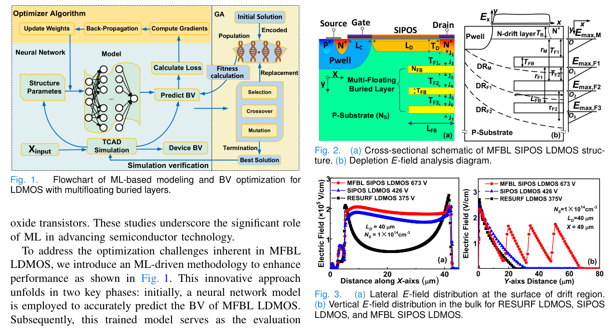
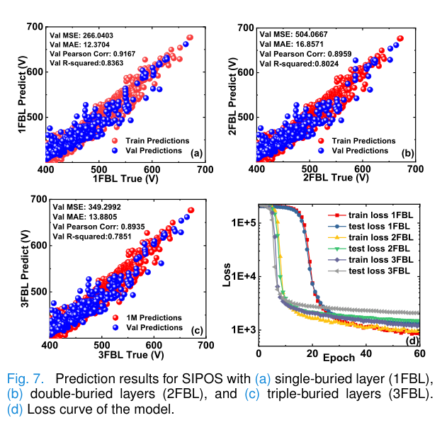
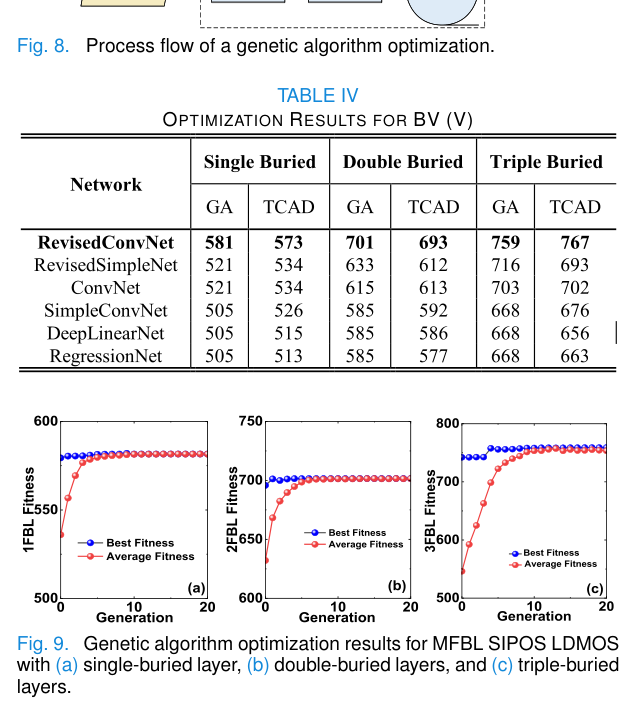

论文导读
Machine Learning-Based Modeling and BV Optimization for LDMOS With Multifloating Buried Layers
IEEE Transactions on Electron Devices, 72(2) · 550-556
将 CNN 预测模型与遗传算法结合，用 TCAD 数据驱动多浮空埋层 LDMOS 的击穿电压优化。
研究问题
多浮空埋层 LDMOS 参数耦合强、结构复杂，传统物理推导与手工扫描难以高效探索最优击穿电压设计空间。
方法
研究先用 TCAD 生成结构参数与 BV 数据集，再训练 CNN 预测模型；随后把预测模型作为遗传算法适应度评估器，自适应搜索最优结构参数，并用 TCAD 回验。
技术路线
- Parameter space
确定 MFBL LDMOS 关键结构参数及合理范围。
- TCAD dataset
通过仿真生成参数-BV 数据集。
- CNN surrogate
训练快速预测 BV 的机器学习模型。
- GA search
用遗传算法搜索高 BV 结构并回到 TCAD 验证。
证据
- 代理模型
- CNN
从 TCAD 数据学习 BV 映射。
- 优化器
- Genetic algorithm
在预测模型上快速搜索结构参数。
- 预测误差
- ≈1.2%
论文报告的平均预测误差。


器件结构与机器学习流程
图中同时给出多浮空埋层 LDMOS 结构和由 TCAD 数据驱动的预测优化流程。
它说明论文并非单纯套用模型，而是围绕具体器件结构建立数据闭环。
图源：IEEE Transactions on Electron Devices, 72(2), 550-556 (2025)。 © 2025 IEEE。
查看原图

击穿电压预测结果
预测图展示模型输出与 TCAD 或仿真结果之间的拟合关系。
这一部分验证机器学习代理模型能否承担后续参数搜索的快速评估器。
图源：IEEE Transactions on Electron Devices, 72(2), 550-556 (2025)。 © 2025 IEEE。
查看原图

遗传算法优化过程
图表展示遗传算法搜索结构参数时的收敛趋势和优化结果。
CNN 代理模型负责快速预测，GA 负责探索设计空间，两者共同降低 TCAD 试错成本。
图源：IEEE Transactions on Electron Devices, 72(2), 550-556 (2025)。 © 2025 IEEE。
查看原图结论与边界
复杂功率器件结构的参数搜索可以由 TCAD 数据和机器学习代理模型显著加速。
该路线展示了器件物理与 AI 优化结合的范式：用仿真数据建立代理模型，再把搜索成本从大量 TCAD 仿真转移到快速预测。
- 把半导体器件物理分析、TCAD 仿真数据和机器学习优化流程连接起来。
- CNN 模型用于快速预测 MFBL LDMOS 的 BV，降低反复仿真的搜索成本。
- 论文报告平均预测误差约 1.2%，并通过 TCAD 验证优化结构的可行性。
阅读重点是“代理模型 + 全局搜索 + 仿真回验”的闭环，而不是单一模型结构。
引用
Zhen Cao, Qi Sun, Qiaowei Peng, Biao Hou, Licheng Jiao, and Yintang Yang. Machine Learning-Based Modeling and BV Optimization for LDMOS With Multifloating Buried Layers. IEEE Transactions on Electron Devices, 2025, 550-556.
下载 BibTeX